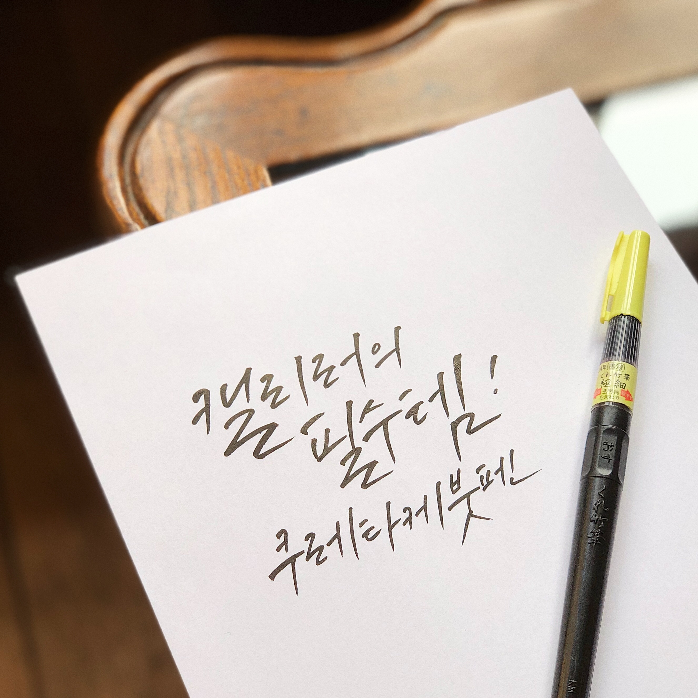
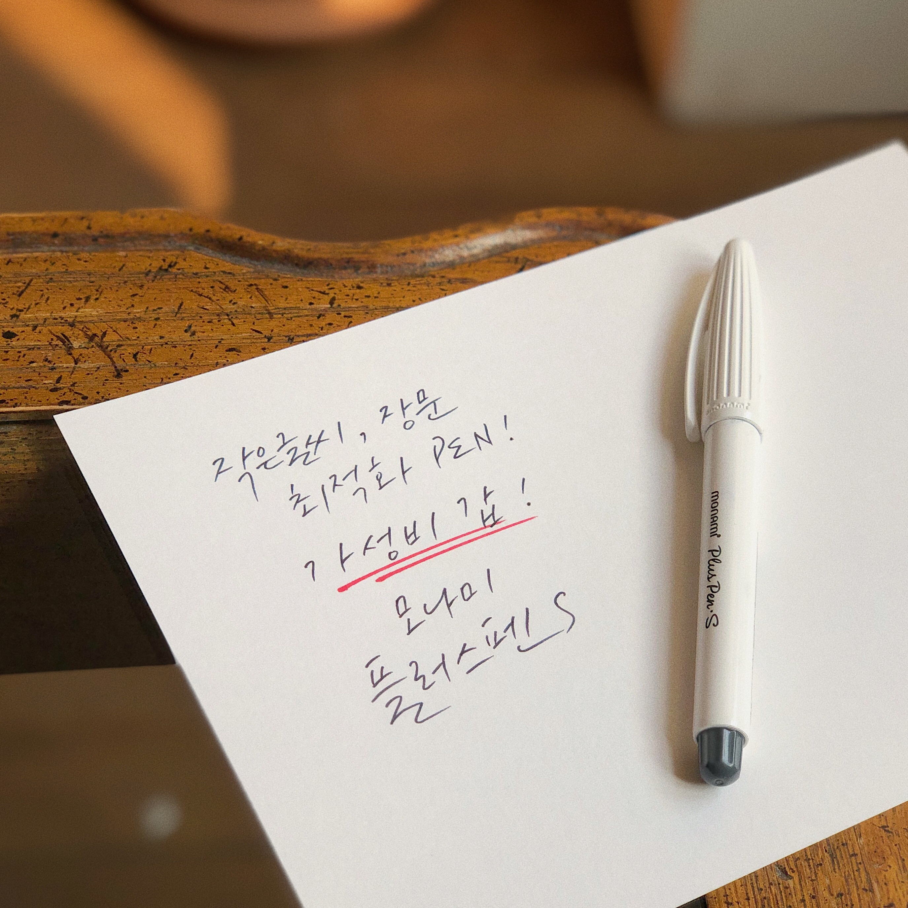

< My 1st Calligraphy >
테마 및 키트설명
" 단돈 만원으로 시작하는 리얼 힐링 취미 키트! "
No.1 Thema : 영화로 시작하는 캘리그라피
무작정 붓펜은 샀는데 막상 어떻게 시작해야할지 감이 잡히지 않는 캘리그라피 입문자를 위한 키트입니다.
"나의 첫 캘리그라피" 라는 큰 테마 안에
'영화', '책', '노래' 등 소테마에 따른 교본이 증정됩니다! :)
키트구성
쿠레타케붓펜 22호 + 스테들러 듀오 + 모나미 플러스펜 + A5 켄트지 50매 + A4용지 + 교본
아이템 디테일
• 전체구성

* A4 용지 : 연습용 용지로 사용하기 좋습니다. (이면지 활용 가능)
* A5 켄트지 : 적당한 크기의 연습지와 작품지의 중간형태로 부담없이 사용하기 좋습니다. (220g)
* 교본 : A4 용지 10장 분량의 '영화 대사'를 따라쓸 수 있는 입문 교본이 제공됩니다.
• 쿠레타케붓펜 22호 - ₩ 3,300
캘리러라면 필수로 갖고 있는 아이템, 쿠레타케 붓펜!
모필로 이루어져 있어 붓의 느낌을 표현하기에 적합하며 특히 입문자에게는 필수 붓펜이라 할 수 있습니다.
대중적으로 가장 많이 사용되고 있는 붓펜이며 사용법도 아주 편리한 재료 중 하나입니다.
• 스테들러 듀오 - ₩ 2,600 (30색 택1)

글씨와 데코 두마리 토끼를 잡을수 있는 아이템, 스테들러 듀오!
쿠레타케와는 다르게 스펀지 형태의 붓펜(흡사 모나미붓펜)과
얇은 유성매직 펜촉의 형식 두가지를 모두 갖추고 있는 아이템 입니다.
데코용으로도 많이 쓰이지만 색다른 느낌의 글씨를 쓰기에도 좋다는 사실!
• 모나미 플러스펜S (블랙) - ₩640
REAL 가성비 갑, 모나미 플러스펜S!
워터마크, 날짜, 장문의 편지글을 쓰기에 적합한 재료중 하나입니다.
기존 플러스펜보다 더 단단한 펜촉을 갖고 있어 잉크 튀김이 덜하다는 장점이 있으며,
평상시 사용하는 일반펜과 비슷하기 때문에 우리에게 가장 익숙한 도구입니다.
• 미리보는 입문 교본
입문자가 최대한 쉽게 따라써볼수 있도록 만들어진 교본!
입문자들에게는 어떤 재료를 사용하라는 가이드 하나만으로도 아주 큰 도움이 되기도 합니다.
입문 교본에서는 페이지마다 재료 추천 및 누구나 쉽게 따라 쓸 수 있는 가이드를 확실히 제공함으로써
보다 쉽게 캘리그라피에 접근할 수 있도록 도와주는 역할을 하고 있습니다.
덤으로 '인생영화'의 명대사를 멋진 글씨로 써볼 수 있는 기회!
실사용자 리뷰
실제 입문자에게 키트를 제공해주고 간단한 후기 인터뷰를 진행해보았습니다.

Q. (약 2시간동안) 키트를 이용해 글씨를 써본 소감과 좋았던 점이 있다면?
A. 원래 캘리그라피에 관심이 있어서 오래 전에 붓펜도 샀던 기억이 있는데
단순히 모니터 화면을 보면서 따라쓰려 하다보니 너무 어려웠고 금방 흥미를 잃었었다.
이 키트의 좋았던 점은 교본 속에 가이드라인이 제시되어 있어서 초보자인 나도 비교적 쉽게 따라할 수 있었고,
간혹 아는 영화 대사가 나와서 더 흥미를가지고 집중해서 쓸 수 있었던 것 같다.
A. 그리고 생각보다 나도 모르게 너무 집중해서 쓰다보니 힐링되는 기분이다.
오랜만에 한가지 일에 집중해본 것 같다. 좋은 취미를 가진 기분!
Q. 반면, 이런 부분은 조금 아쉬웠다 싶은 것이 있나요?
A. 사실 초보자 수준엔 교본 내에 긴 글귀들이 많아서 조금 힘들었다.
한 단어, 한 문장정도만 쓰는 페이지가 더 늘어났으면 좋겠다.
분석 및 앞으로의 개선점
• 단 돈 만원으로 부담없이 시작할 수 있는 취미키트
• 일반적으로 가장 많이 쓰이는 재료로만 구성된 키트
• 아주 간단하게 배우는 포토샵 및 그에 따른 활용법
• 오프라인 강의에서 제공되는 교본 제공
• 연습지 활용법, 붓펜 사용법 등 초보자들을 위한 다양한 팁 제공
• 교본 : 아직 완성 단계가 아니라 계속 수정을 해나갈 계획이다.
교본은 입문자들을 위해 장문보다는 영화 제목이나 짧은 대사들 위주로 수정할 계획임.
• 소테마를 여러가지로 나눠 "영화로 시작하는 캘리그라피", "책으로 시작하는 캘리그라피" 등
다양한 시리즈로 소비자들의 선택권을 넓히면 좋을것 같다.